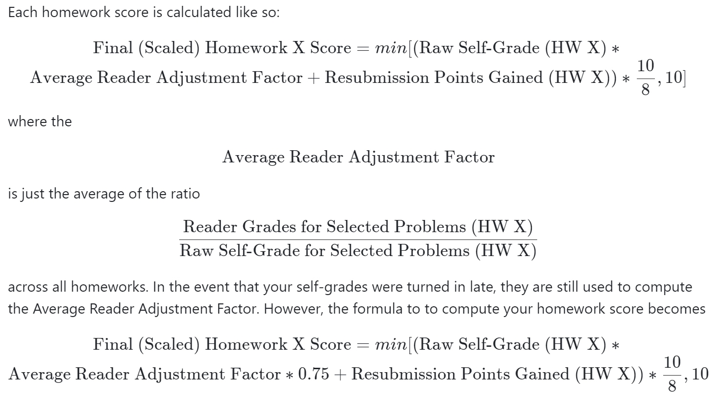
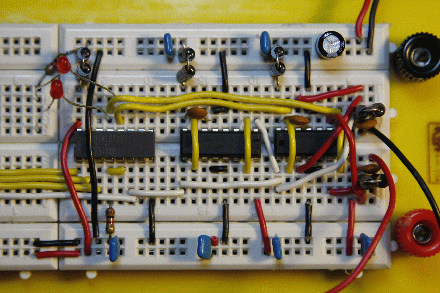

EECS16A, Designing Information Devices and Systems I
Fall 2020
Policies
Course Info
The EECS 16AB series (Designing Information Devices and Systems) is a pair of introductory-level courses introducing students to EECS. The courses have a particular emphasis on how to build and understand systems interacting with the world from an informational point of view. Mathematical modeling is an important theme throughout these courses, and students will learn many conceptual tools along the way. These concepts are rooted in specific application domains. Students should understand why they are learning something.
An important part of being a successful engineer is being able to identify the important and relevant structure in a complex problem while ignoring minor issues. EECS 16A focuses on modeling as abstraction: how can we see the relevant underlying structure in a problem? It introduces the basics of linear modeling, largely from a "static" and deterministic point of view. EECS 16B deepens the understanding of linear modeling and introduces dynamics and control, along with additional applications. Finally, EECS 70, (which can be thought of as the third course in this sequence --- except without any labs), introduces additional discrete structures for modeling problems, and brings in probability.
In EECS 16A in particular, we will use the application domains of imaging and tomography, smartphones and touchscreens, and GPS and localization to motivate and inspire. Along the way, we will learn the basics of linear algebra and, more importantly, the linear-algebraic way of looking at the world. The emphasis will be on modeling and using linear structures to solve problems; the class is not just focused on how to do computations. We will learn about linear circuits, not merely as a powerful and creative way to help connect the physical world to what we can process computationally, but also as an exemplar of linearity and as a vehicle for learning how to do design. Circuits also provide a concrete setting in which to learn the key concept of "equivalence" --- an important aspect of abstraction. Our hope is that the concepts you learn in EECS 16A will help you as you tackle more advanced courses and will help form a solid conceptual framework that will help you learn throughout your career.
Grade Breakdown
Our objective is to help you become the best engineer you can be, and grades are not everything. The various components of the class -- homework, labs and exams -- are designed explicitly with this in mind. Every challenge is a growth opportunity. You will have the opportunity to gain points in the course through completing your homework and attending labs as well as through the exams.
This course is not graded on a curve. We will set absolute thresholds for performance that will map to grade boundaries. We encourage you to discuss the course material with each other and teach each other new ideas and concepts that you learn. Teaching the material is one of the best ways to learn, so discussing course material with colleagues in the class is a win-win situation for everyone. Grades are not everything, far from it, but that said, here is the breakdown for grading for this class.
| Category | Points (out of 300) |
|---|---|
| Participation/Staying On Track | 10 points |
| Homework | 45 points |
| Labs | 45 points |
| Midterm 1 | 50 points |
| Midterm 2 | 50 points |
| Final | 100 points |
Notice that you can get many points by being regular with your homework and the labs. Our goal is to help you learn the material as best as possible!
Grading Scale
This course is not curved. We define the following grading scale (in percentages):
| A | [93+) | A- | [90+) | ||
| B+ | [84+) | B | [75+) | B- | [68+) |
| C+ | [65+) | C | [62+) | C- | [58+) |
| D+ | [57+) | D | [55+) | D- | [53+) |
| F | [0-, 53) |
Exam "Second Chance" Policy
This course spans a fairly broad set of ideas and concepts within a short period of time, and hence sustained and consistent effort and investment are critical to your success in this class. Similarly, by far the most common operating mode we have observed in previous students who struggled and/or failed this class was attempting to do the bare minimum in general and then catch up/cram right before the exams.
In order to formally encourage all of you to maintain the sustained effort that we have observed to be critical to success, we will be adopting a new policy regarding exam clobbering, participation, and effort. Specifically, for students who (1) complete an optional midterm redo and (2) perform significantly better on the final than on the relevant midterm, we will provide the opportunity to clobber a midterm.
If you qualify for the second chance policy (i.e. (1) and (2)), you may replace your lowest midterm score with your scaled score on the final exam according to the formula below.
Replacement MT score (on scale of 100) = max [MT score, final exam score - 15% (on scale of 100)] This essentially allows you to replace your midterm grade by a higher grade --- we want to reward improved performance.
If you complete the optional midterm redo for both midterms, and are eligible for a second chance on both midterms, we will choose the exam that helps your overall grade the most. Please note that even though lecture attendance is not included (for logistical reasons) in the two criteria for clobbering eligibility, we do strongly encourage you to attend lecture in person.
Homework Party and Office Hours
9/30/2020: As OH becomes more popular, we will be implementing a policy where TAs will spend about 10 minutes with each student, and move down the queue after this time (this applies when other students are on the queue). This is to ensure that everyone has a better chance to ask their questions. We are actively observing OH utilization are various time slots and making changes to TA allocations to best accomodate everyone's timing preferences as well.
9/2/2020: The information below might be slightly out of date as we work on developing the best all-around solution for your learning; for the most recent information concerning OH and (especially) HW Party, including detailed information about how to join and what steps to take, please see this Piazza Post.
Homework parties (held at this queue) are your chance to meet and interact with other students, while also having the chance to get help from GSIs, Tutors and Faculty. This is your chance to have a social experience as part of the class. We expect students to treat each other with respect during homework parties as well as during all other parts of the class, including interactions on Piazza, discussion, and office hours (at https://oh.eecs16a.org/). Remember that each of you is coming into a class with different experiences and backgrounds -- use this as an opportunity to learn from one another.
Thursdays 9-11AM and 2-4PM PT, HW Party will be held online. Attending homework party is highly encouraged and is a great way to find a study group! Students are expected to help each other out, and if desired, form ad-hoc "pickup" homework groups in the style of a pickup basketball game. We highly encourage students to attend homework party. This year, homework parties will be hosted online; please see this Piazza Post for details.
Office Hours will be held every day (at this link), as annotated on the course Google calendar. You can come to office hours with your study groups, or by yourself -- there will be one or more TAs there to help you work through the concepts or the homework!
OH and HW Party Walkthrough (Fa20!)
Homework Submission
Homeworks are due on Friday night at 11:59 PM Pacific Time (PT). You need to turn in a .pdf file consisting of your written-up solutions that also includes an attached pdf "printout" of your .ipynb code on Gradescope. In addition, Gradescope has an option to associate pages of your work to each homework problem. You must select the relevant pages for every problem. Any homework submissions that are turned in without the code “printout” (or screenshot) attached will receive a zero on the coded ipython notebook portions of the homework. Any problems without pages selected will receive zero credit. If you have any questions about the format of a homework submission, please go to office hours or homework party. Additionally, we will provide HW accommodations for students who have letters of accommodations from DSP services and will be handled on a case-by-case basis.
You will have the opportunity to resubmit your homework after homework solutions are released to get makeup credit. See below for details.
Homework Grading – Self-Grading
The point of homework in this class is for you to learn the material. To help you in doing this, you will both grade your own homework and be graded by 16A readers. After the HW deadline, official solutions will be posted online. You will then be expected to read them and enter your own scores and comments for every part of every problem in the homework on a simple coarse scale.
| Score | Reason |
|---|---|
| 0 | Didn't attempt or very very wrong |
| 2 | Got started and made some progress, but went off in the wrong direction or with no clear direction |
| 5 | Right direction and got half-way there |
| 8 | Mostly right but a minor thing missing or wrong |
| 10 | 100% correct |
Note: You must justify self-grades of 2, 5 or 8 with a comment. Grades of 0 and 10 do not need to be justified. If you are really confused about how to grade a particular problem, you should post on Piazza. This is not supposed to be a stressful process.
We will hold extra office hours that will do HW run-throughs after the HW solutions have been released. These will be held on Monday, and we encourage you to attend them to ask questions about grading and clarify your understanding of the HW and solutions.
Your self-grades will be due on the Monday following the homework deadline at 11:59 PM sharp. Weekly discussion checkoffs (in case you did not attend live discussion the previous weeks) will be due at the same time. (For example: Homework 1 will be due on Friday 9/4 at 11:59 PM. The following Monday, 9/7, at 11:59 PM, your Homework 1 self-grades will be due along with the discussion checkoff forms for the week of 8/31-9/4.)
To help keep track of these deadlines, we have released a self-guided Progress Tracker that you can optionally use.
Your self-grades will be due on the Monday following the homework deadline at 11:59 PM sharp. We will accept late self-grades up to a week after the original homework deadline for 75% credit on the associated homework assignment. If you don't enter a proper grade by this deadline, you are giving yourself a zero on that assignment. Merely doing the homework is not enough, you must do the homework; turn it in on time; read the solutions; do the self-grade; and turn it in on time. Unless all of these steps are done, you will get a zero for that assignment.
We will automatically drop the lowest homework score from your final grade calculation. This drop is meant for emergencies. If you use this drop half-way into the semester, and request another, we cannot help you. EECS47D students will not have their lowest homework score dropped.
Just like we encourage you to use a study group for doing your homework, we strongly encourage you to have others help you in grading your assignments while you help grade theirs.
Course readers are going to be grading and sending you occasional comments. Because we have reader grades, we will catch any attempts at trying to inflate your own scores. This will be considered cheating and is definitely not worth the risk. Your own scores will be used in computing your final grade for the course, adjusted by taking into account reader scores so that everyone is fairly graded effectively on the same scale. For example, if we notice that you tend to give yourself 5s on questions where readers looking at your homeworks tend to give you 8s, we will apply an upward correction to adjust.
Reader grades will be released on Gradescope about one week after the homework deadline. Readers grade questions either on a “coarse” or “fine” scale for each homework part. Coarsely graded question parts are worth a single point and are based on effort. Finely graded question parts are worth a total of 10 points and are graded using the same self-grading rubric above. Homework regrade requests are typically due on Gradescope within 72 hours of reader grades being released. If a regrade request is submitted for a part of a question on the homework, the grader reserves the right to regrade the entire homework and could potentially take points off.
If you have any questions, please ask on Piazza.
If you are curious as to how your homework scores are calculated, please look at the formula below.
Self-Grade Walkthrough
Homework Resubmission
Again, the point of homework in this class is to help you learn. We understand that sometimes work from other classes, midterms or your personal life can come in the way of making a homework deadline. For this reason we will allow you to resubmit your homework for 70% credit. Homework resubmissions must be HANDWRITTEN. Homework resubmissions will be due along with the self-grades, so they will be due by 11:59pm Monday night. If you choose to resubmit your homework, you must submit two sets of self-grades, one for the first submission and one for the second submission. For the second submission, do self-grades as normal. We will apply the 70% correction.
What does 70% credit mean? Let us say you only were able to get halfway through a problem during the first submission. You submitted your homework on Friday, and while going through the solutions you figured out how to do the whole problem. Your self-grade for your first submission would be a 5/10. However, you can resubmit the homework problem with a fully correct solution and receive 70% of the remaining points as extra points, i.e. (10-5) * 70/100 = 3.5 extra points, and so your score for the problem would go from 5 points to 8.5 points.
Homework Effort Policy
Because the point of homework in this class is to help you learn, not to punish you for making small mistakes, if your final score (after resubmission and any other corrections are applied) on any homework is above 8/10, your grade will automatically be bumped up to 100% (10/10). If your final score is less than 8/10, it will be scaled accordingly so that a 6/10 will result in 75% (7.5/10).
Participation in Discussion
Discussion is a key component to learning the material in this class, and to keep you motivated and on track, you can earn points towards your grade by attending discussion.
Participation is worth a maximum of 10 points. This is measured by discussion attendance. If you attend a discussion section live your attendance will automatically be counted through Zoom attendance. If you choose instead to watch a recording, you must fill out a Google form and describe what you learned in the discussion video. You must attend/watch 16 discussion sections to get full participation points.
If you do not get full credit, your grade will be prorated by the number of discussion checkoffs you complete; e.g., if you attend (watch) 14 discussions or complete 14 checkoffs, you will have 14/16 * 10 = 8.7 points in this category.
Lab and Discussion Section Policies
Ways to check attendance will be posted on Piazza on a later date.
Labs for this class are not open section, you must go to your assigned lab section .
Credit for each lab is based on completion and checkoff with a lab TA during your assigned lab section. In a checkoff, you will demonstrate your work from portions of the lab and answer conceptual questions related to the lab. You should aim to get checked off by the end of your lab section. If (and only if) you attend your lab section for the whole duration but do not finish in time, you may get checked off at the beginning of your next lab section before starting the following lab. While labs are not meant to be burdensome, they are an essential part of the course. We have the following grading policy for labs: If you complete all the labs, you will receive full lab credit. If you fail to complete one lab, you will receive almost full 44/45 lab credit. If you miss two labs, you will receive 42/45. If you miss three labs, you will receive 23/45 (half credit). If you miss four or more labs, you will get an F in the class.
| Number of Missed Labs | What Happens? |
|---|---|
| 0 | You get full lab credit - 45/45 |
| 1 | You get almost full lab credit - 44/45 |
| 2 | You get most lab credit - 42/45 |
| 3 | You get half lab credit - 23/45 |
| 4 or more | You Fail the class - final letter grade: F |
Some lab sections are “buffer labs.” These occur during several-day periods in which no new labs begin and are offered during all regular lab times.
During buffer lab periods, you may get checked off for only one missed lab that occurred during that lab module by attending your regular assigned section . No other labs can be checked off. The eligible labs for makeup for each buffer lab period are indicated on the course schedule. If you have already completed all labs for a particular lab module, you do not need to attend the buffer lab for that module.
Wires on lab breadboards must be planar. All students will receive a lab kit to use during lab sections. Lab staff will ask students to redo their circuits before debugging them if the wires are non-planar. The definition of planar wires on a breadboard is shown below:
| Planar | Non-planar |
|  |  |
Exam Policies
There are two midterms and one final. The midterms will be held Monday, Oct 5, 2020 from 7:00pm to 9:00pm PT and Monday, Nov 2nd, 2020 from 7:00pm to 9:00pm PT. The final will be held on Friday, Dec 18, from 8:00am to 11:00am PT. These times have been carefully chosen to be reasonable in most time zones across the world.
Makeup exams will not be scheduled. In general, alternate exam times will not be provided, except in extenuating circumstances regarding timezones or students requiring specific accommodations. Alternate exams will in general not be provided for students who have scheduled classes with time-conflicts. Please contact us privately if you have any concerns.
Please plan for exams at these times. In case of an emergency on exam day, please email the Head GSI at eecs16a@berkeley.edu as soon as possible and provide details of the issue as well as a contact phone number. Emergency exam conflicts will be handled on a case-by-case basis. Exam conflicts originating from a lecture conflict will not be accommodated.
Regrade requests on Gradescope are typically soon after exam scores are released on Gradescope. Late regrade requests will not be considered. If a regrade request is submitted for a part of a question on the exam, the grader reserves the right to regrade the entire exam and could potentially take points off.
Exam Proctoring
Remote proctoring will be taking place for the midterms and final exam. Virtual backgrounds will not be permitted. Please read the detailed proctoring policy available here.
Exceptions and Exam Accommodations
Any requests for exceptions should be emailed to the Head GSI at eecs16a@berkeley.edu. Email the exception request as soon as possible. Exceptions will be handled on a case-by-case basis. Since there is one homework drop, missing homework is rarely excused. Examples of situations that merit an exception are medical emergencies and family emergencies. It will be easier for us to grant an exception if you have a doctor’s note or other documentation.
Accommodations will be provided to students who have letters of accommodations from DSP services and students facing hardships. Student hardships may include residing in a time zone that is significantly different from Berkeley’s time zone and family/medical emergencies (please provide documentation for your records).
If you can foresee unstable or limited WiFi access to an upcoming exam, contact eecs16a@berkeley.edu to determine a procedure that will support you. Additionally, if your WiFi access is disrupted or fails during the exam, contact eecs16a@berkeley.edu as soon as possible for an alternative arrangement.
Course Communication
The instructors and TAs will post announcements, clarifications, hints, etc. on Piazza. So, you must check the EECS16A Piazza page frequently throughout the term. (You should already have access to the EECS16A Fall 2020 Piazza . If you do not, please let us know.)
If you have a question, your best option is to post a message on Piazza. The staff (instructors and TAs) will check Piazza regularly, and if you use Piazza, other students will be able to help you too. When using Piazza, please avoid off-topic discussions, and please do not post answers to homework questions before the homework is due. Also, always look for a convenient category to post the question to (for example, each homework will have its own category, so please post there). That will ensure you get the answer faster.
If your question is personal or not of interest to other students, you may mark your question as private on Piazza, so only the instructors will see it. If you wish to talk with one of us individually, you are welcome to come to our office hours at https://oh.eecs16a.org/. Please reserve email for the questions you can't get answered in office hours, in discussion sections, or through Piazza.
For any exceptions that are of a personal nature, please contact the head GSI at eecs16a@berkeley.edu. Technical and homework questions are best resolved in homework party and during office hours (click here to visit the queue).
It can be challenging for the instructors to gauge how smoothly the class is going. We always welcome any feedback on what we could be doing better. If you would like to send anonymous comments or criticisms, please fill out this anonymous feedback form.
Collaboration
We encourage you to work on homework problems in study groups of two to four people; however, you must always write up the solutions on your own. Similarly, you may use books or online resources to help solve homework problems, but you must always credit all such sources in your write up, and you must never copy material verbatim. Using previous EECS 16A homework, exam, and lab solutions is strictly prohibited, and will be considered academic dishonesty. This is not how you want to start your career as an engineer.
We expect that most students can distinguish between helping other students and cheating. Explaining the meaning of a question, discussing a way of approaching a solution, or collaboratively exploring how to solve a problem within your group is an interaction that we encourage strongly. But you should write your homework solution strictly by yourself so that your hands and eyes can help you internalize the subject matter. You should acknowledge everyone whom you have worked with, or who has given you any significant ideas about the homework. This is good scholarly conduct.
Collaboration during exams or other designated assessments is strictly forbidden, subject to the Berkeley Honor Code, Code of Conduct, and the parameters of the specific assessment.
16A Study Group Formation
During an in-person semester, we would traditionally have many opportunities for students to get to know their peers and form study-groups. To adapt to the current semester, we are rolling out a brand new system for study-group formation where you can request study partners just by submitting a simple Google preference survey. This survey is part of the first homework, and is worth points on the HW, so please make sure you fill it out.
The homework starting week 2 will be significantly longer than the first homework, so having people to brainstorm with can be very helpful and improve your learning. We will try to create groups of students based on what year you are, what other courses you are taking and your time preferences. We are hoping the groups will be ready in time for you to work on Homework 2 together. Please make sure you fill out the survey!
Don't Be Afraid to Ask for Help
Are you struggling? Please come talk with us! The earlier we learn about your struggles, the more likely it is that we can help you. Waiting until right before an exam or the last few weeks of the semester to let us know about your problems is not an effective strategy - the later it is, the less we will be able to help you.
Even if you are convinced that you are the only person in the class who is struggling, please overcome any feelings of embarrassment or guilt, and come ask for help as soon as you need it -- we can almost guarantee you're not the only person who feels this way. Don't hesitate to ask us for help -- we really do care that you thrive! You can email eecs16a@berkeley.edu, or email / talk to any TA at any time -- we’re happy to help.
Inclusion
We are committed to creating a learning environment welcoming of all students that supports a diversity of thoughts, perspectives and experiences, and respects your identities and backgrounds (including race/ethnicity, nationality, gender identity, socioeconomic class, sexual orientation, language, religion, ability, etc.) To help accomplish this:
- If you feel like your performance in the class is being impacted by your experiences outside of class (e.g., family matters, current events), please don’t hesitate to come and talk with us. We want to be resources for you.
- We (like many people) are still in the process of learning about diverse perspectives and identities. If something was said in class (by anyone) that made you feel uncomfortable, please talk to us about it.
- As a participant in this class, recognize that you can be proactive about making other students feel included and respected.
Even if you are convinced that you are the only person in the class who is struggling, please overcome any feelings of embarrassment or guilt, and come ask for help as soon as you need it -- we can almost guarantee you're not the only person who feels this way. Don't hesitate to ask us for help -- we really do care that you thrive! You can email eecs16a@berkeley.edu, or email / talk to any TA at any time -- we’re happy to help.
Berkeley Honor Code
Everyone in this class is expected to adhere to this code: “As a member of the UC Berkeley community, I act with honesty, integrity, and respect for others.”
Accommodation policy: We honor and respect the different learning needs of our students, and are committed to ensuring you have the resources you need to succeed in our class. If you need religious or disability-related accommodations, if you have emergency medical information you wish to share with us, please share this information with as needed. You may write to the course email address eecs16a@berkeley.edu and please also see DSP and CPS under “Resources”.
Policy on Course Content
You are free and encouraged to use course materials for personal use (in collaborations with other students, in your research, etc.). You may NOT post HW/Exams/Solutions anywhere on the web because this could encourage cheating down the road. You are expressly prohibited from uploading course materials to websites such as coursehero.com or chegg.com, which distribute and monetize content without compensation to the University. Course material, including all video, is copyrighted and reposting to third party sites or any other form of redistribution is prohibited.
Resources
Center for Access to Engineering Excellence (CAEE) The Center for Access to Engineering Excellence (227 Bechtel Engineering Center) is an inclusive center that offers study spaces, nutritious snacks, and tutoring in >50 courses for Berkeley engineers and other majors across campus. The Center also offers a wide range of professional development, leadership, and wellness programs, and loans iclickers, laptops, and professional attire for interviews.
Disabled Students' Program (DSP):" The Disabled Student’s Program (260 César Chávez Student Center #4250; 510-642-0518) serves students with disabilities of all kinds. Services are individually designed and based on the specific needs of each student as identified by DSP's Specialists.
Counseling and Psychological Services (CPS): The main University Health Services Counseling and Psychological Services staff is located at the Tang Center (2222 Bancroft Way; 642-9494) and provides confidential assistance to students managing problems that can emerge from illness such as financial, academic, legal, family concerns, and more. To improve access for engineering students, a licensed psychologist from the Tang Center also holds walk-in appointments for confidential counseling in 241 Bechtel Engineering Center (check here for schedule).
The Care Line (PATH to Care Center): The Care Line (510-643-2005) is a 24/7, confidential, free, campus-based resource for urgent support around sexual assault, sexual harassment, interpersonal violence, stalking, and invasion of sexual privacy. The Care Line will connect you with a confidential advocate for trauma-informed crisis support including time-sensitive information, securing urgent safety resources, and accompaniment to medical care or reporting.
Ombudsperson for Students: The Ombudsperson for Students (102 Sproul Hall; 642-5754) provides a confidential service for students involved in a University-related problem (academic or administrative), acting as a neutral complaint resolver and not as an advocate for any of the parties involved in a dispute. The Ombudsman can provide information on policies and procedures affecting students, facilitate students' contact with services able to assist in resolving the problem, and assist students in complaints concerning improper application of University policies or procedures. All matters referred to this office are held in strict confidence. The only exceptions, at the sole discretion of the Ombudsman, are cases where there appears to be imminent threat of serious harm.
UC Berkeley Food Pantry: The UC Berkeley Food Pantry (#68 Martin Luther King Student Union) aims to reduce food insecurity among students and staff at UC Berkeley, especially the lack of nutritious food. Students and staff can visit the pantry as many times as they need and take as much as they need while being mindful that it is a shared resource. The pantry operates on a self-assessed need basis; there are no eligibility requirements. The pantry is not for students and staff who need supplemental snacking food, but rather, core food support.
Technology Needs (STEP): Student Technology Equity Program (STEP). STEP provides laptops and other technologies for free and is for undergraduate, graduate, and professional students. It requires just a simple online application form. The laptops provided are brand-new, come with four years of premier support, and meet basic requirements for students in all fields of study. There also will be opportunities for students to apply for and pick up equipment in person - curbside and contactless - at the Student Union over the next few weeks. If students live outside the Berkeley area, STEP will ship the equipment directly to them, free. STEP will continue to distribute hardware throughout the academic year, while supplies last.
Advice
The following tips are offered based on our experience.
Do the homeworks! The homeworks are explicitly designed to help you to learn the material as you go along. There is usually a strong correlation between homework scores and final grades in the class.
Keep up with lectures! Discussion sections, labs and homeworks all touch on portions of what we discuss in lecture. Students do much better if they stay on track with the course. That will also help you keep the pace with your homework and study group.
Take part in discussion sections! Discussion sections are not auxiliary lectures. They are an opportunity for interactive learning. The success of a discussion section depends largely on the willingness of students to participate actively in it. As with office hours, the better prepared you are for the discussion, the more you are likely to benefit from it.
Please come to office hours! We love to talk to you and do a deep dive to help you understand the material better.
Form study groups! As stated above, you are encouraged to form small groups (two to four people) to work together on homeworks and on understanding the class material on a regular basis. In addition to being fun, this can save you a lot of time by generating ideas quickly and preventing you from getting hung up on some point or other. Of course, it is your responsibility to ensure that you contribute actively to the group; passive listening will likely not help you much. And recall the caveat above that you must write up your solutions on your own. We advise you strongly to spend some time on your own thinking about each problem before you meet with your study partners; this way, you will be in a position to compare ideas with your partners, and it will get you in practice for the exams. Make sure you work through all problems yourself, and that your final write-up is your own. Some groups try to split up the problems ("you do Problem 1, I'll do Problem 2, then we'll swap notes"); not only is this a punishable violation of our collaboration policies, it also ensures you will learn a lot less from this course.